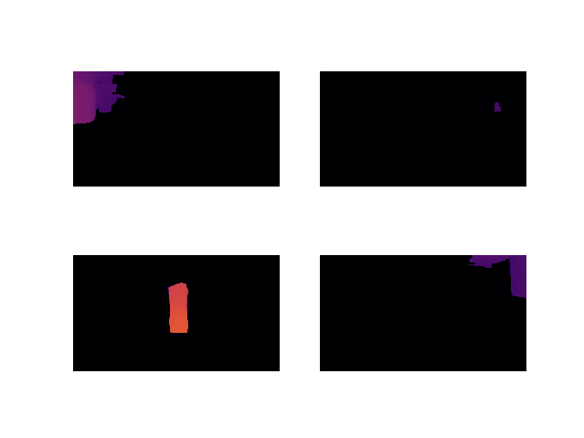

Lidar is a powerful tool, and very simple to implement using the ROS2 and Neato platform. However, ultimately the data it provides is rather sparse, and many objects it simply cannot see. Our solution to this problem was to include a camera in the object detection pipeline. Instead of using a traditional stereo camera, our group decided to explore the possibility of using monocular vision for obstacle detection.
For monocular vision, we used Depth Anything (v2), a monocular depth estimation deep learning model that was released in 2024. This allows us to generate a relative depth map using a photo taken from any camera. From here, we process the image to find obstacles using the following steps:
The pipeline is summarized in the following flow chart.
To illustrate the pipeline, we will use this image which was taken from a Raspberry Pi Camera Module 3 Wide mounted on a Neato.
When Depth Anything takes a photo from the Neato, this is the result. We noticed that the floor can be represented as a gradient. We believed that after removing the floor gradient, everything else can be considered an obstacle. The maximum value of the gradient is the mean of the lowest row of pixels of the depth floor, and the gradient extends to the “horizon line”, which was at y=150 on the Neato’s camera.
When we subtract these images, we are able to obtain a depth map without any gradient.
Using boolean indexing, we can simplify the remaining objects to a mask.
OpenCV’s contour detection can be used on the binary map to create reliable masks, as well as mark each object as a separate object. This allows us to perform the following tasks on each separate contour.
Since Depth Anything and other monocular depth models generally produce relative depth maps, it is often difficult to identify the scale at which a camera is working at. Below, we show two images that will look identical through a monocular depth model. However, one is an aerial view of the Chambord Castle, while the other is a 1/30 scale model replica in the French Miniature.
There are three common approaches to tackle this issue:
Sensor fusion requires precise calibration and embedded integration. Since the camera is mounted in the front, and the lidar is mounted in the back, we were not sure it was possible to do the calibration necessary. The Neato also lacks any sort of real movement sensor. It has an odometry function, but that is prone to error.
However, since the Neato is locked in the y-axis, and the camera is mounted to a static orientation, we can assume that the depth is consistent across all images. This is further enforced by the ground gradient. Since the camera will always see the floor, it will always pick up objects as relative distances to the floor.
Thus, we can find the predicted distance by finding the mean value of the depth map at each contour. We calibrated the pixel strength to actual distance and was able to get distance measurement with a precision of 10 cm.

For ray calculation, we selected the row of the bottom most points in the contour (since we assume that these objects are on the floor) and projected them to 3D space.
Ray projection requires the following parameters:
This allows us to construct the camera Matrix K which projects a point from 3D space onto an xy picture plane.
| { | f | 0 | cx | } | |
| k = | 0 | f | cy | ||
| 0 | 0 | 1 |
where f = focal length / pixel size
And cx , cy are the center pixel of the image.
Taking the inverse of k gives us a matrix that projects a point from the xy picture plane onto 3D space. We can take any arbitrary point (x,y) from the image and multiply it by k to obtain a ray. We normalize this ray and scale it by the distance to obtain a cartesian point with respect to the Neato’s base link.
Ground truth: the water bottle is 50 cm away and has a 9 cm diameter.
Bottom left: raw image
Top left: depth map
Top right: obstacle mask overlaid over depth map
Bottom right: cartesian points of obstacles
The Occupancy field expects data of the following format
After converting to centimeters, we apply a frame transformation to the Odom frame. This is done by first rotating the points to align with the direction of the Neato’s Odom orientation. After translating the points, we can start looking at sending a PointCloud. Using list comprehension, we are able to create a list of Point32 objects, which we send to a topic.
Our camera estimation is able to, independent of movement or additional sensors, identify obstacles and locate them on points with a high degree of accuracy. However, it is ultimately limited by the 102° horizontal field of vision. We also found that the functional range of the depth map using the floor gradient was 1.5 m. This meant that if there are no obstacles within 1.5 m and in the 102° field of view of the Neato, the vision pipeline would return a blank map. We decided that including Lidar would increase the map’s robustness by detecting objects outside of this range. Lidar is able to identify “long term” obstacles such as walls, while the camera is able to find “imminent” obstacles, such as chairs, table legs, or ground clutter that the Lidar is more prone to missing.
Lidar scan is given as polar coordinates in the robot’s base_link frame. We convert the points to Cartesian form and transform them to the Odom frame.